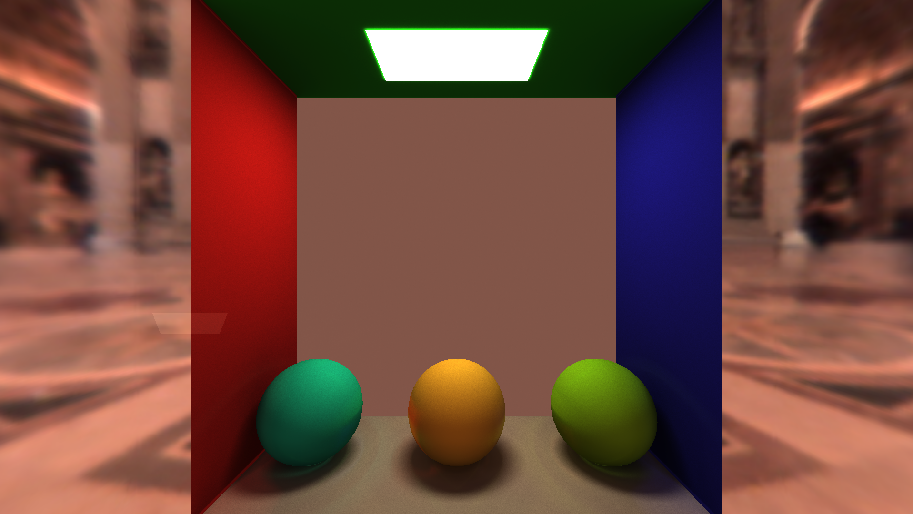
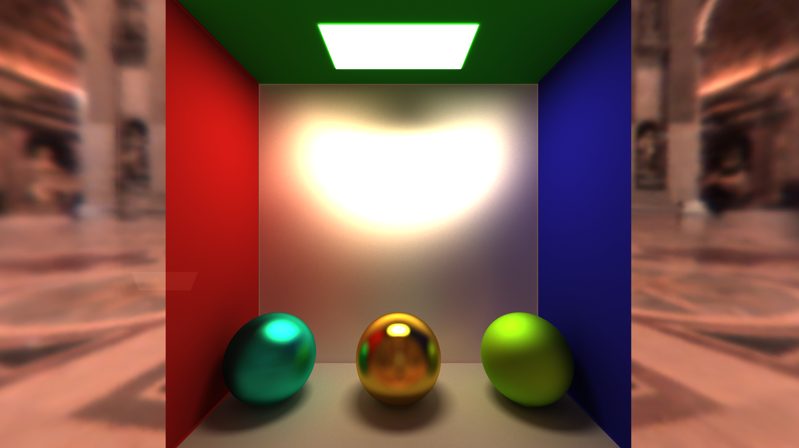
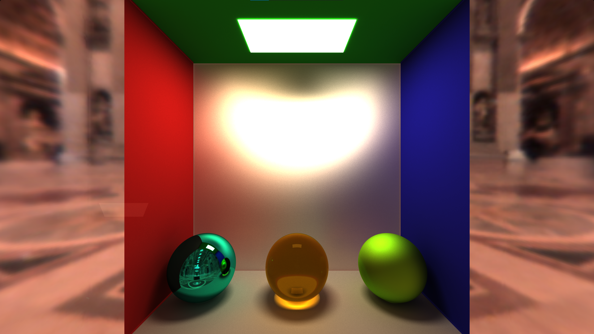
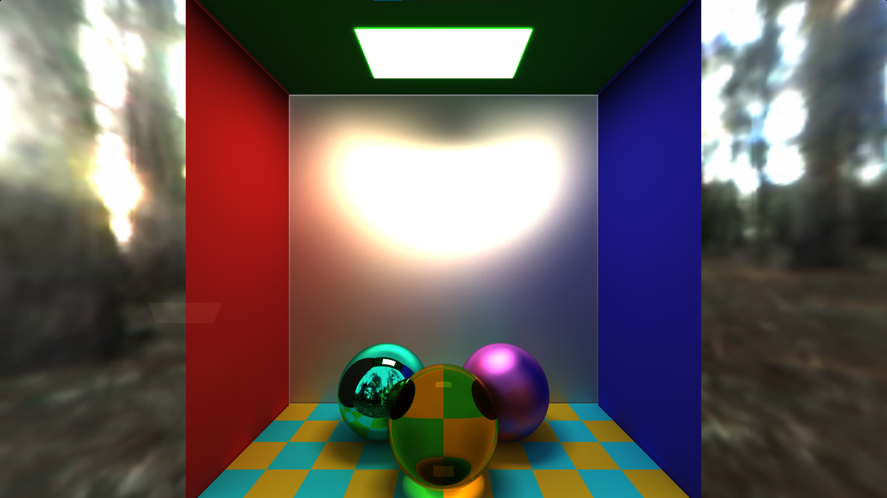

Path Tracing with ShaderToy
This path tracer is inspired by Cook's distributed ray tracing method. We simulate multiple bounces by writing an iterative version of the conventional ray tracing pipeline (since shaders don't support recursion). The radiance accumulated at each object hit is multiplied by an intensity value which keeps diminishing due to absorption, unless a specular surface is encountered. Soft shadows, which is a (groundbreaking) feature of Cook's model can also be produced. Caustics under refractive surfaces was a rather surprising effect which was seen and they seem to converge very nicely as well as can be seen in the following pictures. And most importantly, all these pictures don't take more than a couple of minutes to converge.

Shiny rough surfaces and specular surfaces

Refractive surfaces and caustics

Checkerboard flooring with the refractive index of the centre sphere dialed up
